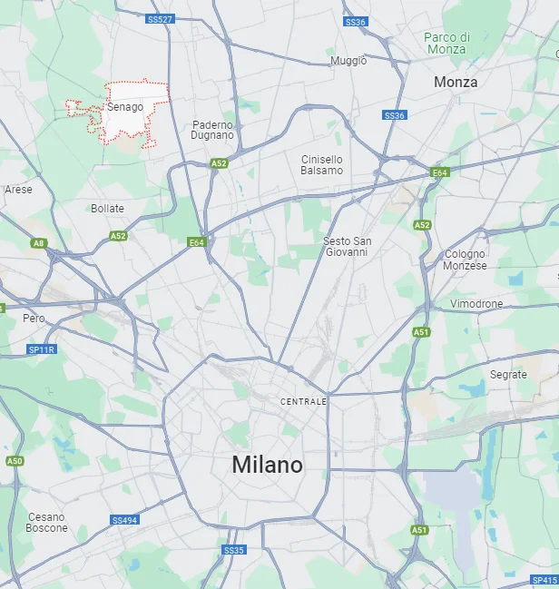

Giulia Tramontano aveva 29 anni ed era incinta di sette mesi, lei abitava a Senago, un comune di 20000 abitanti a Nord di Milano e lavorava come agente immobiliare. Si era trasferita dalla campania, da Sant'Antimo in provincia di Napoli.
Giulia era una donna piena di energia che da lì a poco sarebbe dovuta diventare mamma
Succede circa alle sette del pomeriggio di sabato 27 maggio 2023, quando la donna rientra nella sua casa di via Novella a Senago.
Ad aspettarla c'è il suo compagno e convivente, Alessandro Impagnatiello, barman di un anno più grande di lei.
Il barman Alessandro Impagnatiello ha ucciso la fidanzata Giulia Tramontano a coltellate dopo una lite. Poi ha tentato di bruciare il suo corpo senza riuscirci. Infine ha trasportato il cadavere a 500 metri da casa sua e lo ha nascosto in un'intercapedine di un locale box. Le coltellate sarebbero state 37.
È sconvolgente riflettere sulla ferocia e insensibilità con cui Alessandro Impagniatello ha privato la vita a Giulia, portando alla morte non solo lei, una donna incinta completamente indifesa, ma anche l'innocente bambino che doveva ancora venire al mondo.
La prossima vittima potrebbe essere chiunque.
Anche qualcuno che conosci.
Home